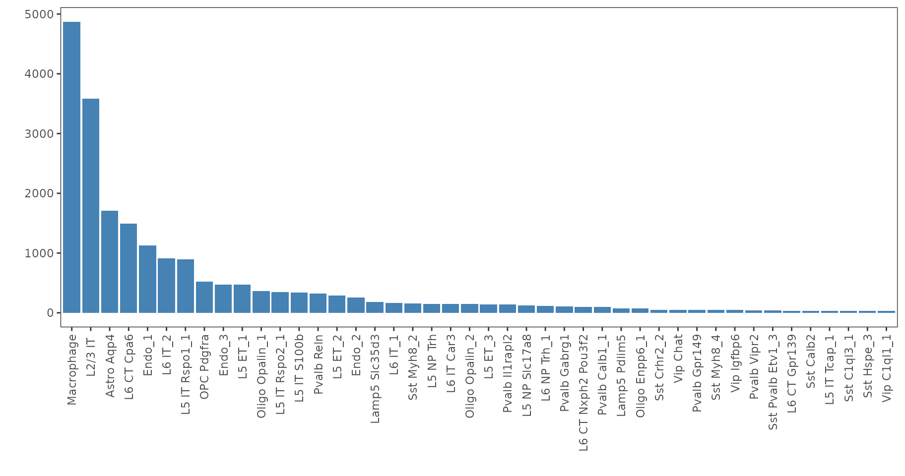
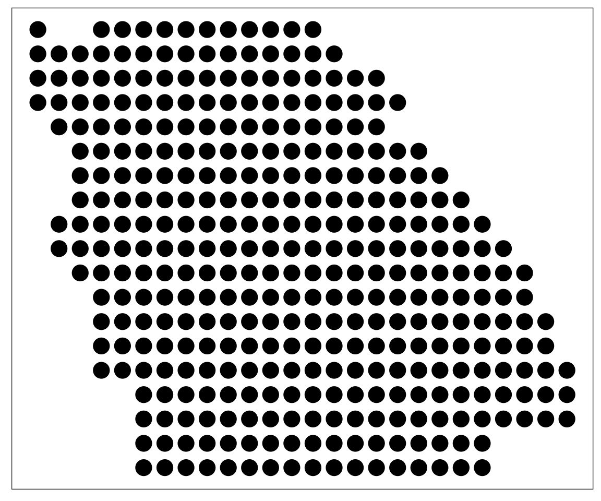

DOT: A flexible multi-objective optimization framework for transferring features across single-cell and spatial omics
Arezou Rahimi
2024-02-05
general.RmdSetup
The following example illustrates how DOT is used for inferring cell type composition of spots in a synthetic multicell spatial data of the primary motor cortex region (MOp) of the mouse brain. The reference single-cell RNA seq sample comes from a similar region and contains 44 cell types. Both spatial and single-cell data are down-sampled to 500 genes in this example.
data(dot.sample)
# gene x cell
dim(dot.sample$ref$counts)
#> [1] 500 20385
ggplot(as.data.frame(sort(table(dot.sample$ref$labels), decreasing = T)), aes(x = Var1, y = Freq))+
geom_bar(stat="identity", fill="steelblue")+
xlab("")+ylab("")+theme_bw()+
theme(panel.background = element_rect(fill = 'white'),
panel.grid = element_blank(),
axis.text.x = element_text(angle = 90, vjust = 0.5, hjust=1))
# gene x spot
dim(dot.sample$srt$counts)
#> [1] 500 361
plot_data <- dot.sample$srt$coordinates
ggplot(plot_data, aes(x = Col, y = Row))+
geom_point(size = 5)+
theme_bw()+
theme(panel.background = element_rect(fill = 'white'),
panel.grid = element_blank(),
axis.text = element_blank(),
axis.title = element_blank(),
axis.ticks = element_blank())
Decomposition
The first step of DOT is to set up a DOT object.
DOT takes two main inputs:
ref_datais either amatrix,dgMatrix, ordata.frameor aSeurat/anndataobject containing the gene x cell count matrix for the reference single-cell data.If
ref_datais amatrix,dgMatrix, ordata.frame, thenref_annotationsmust be supplied as a 1-dimensional vector of cell annotations.If
ref_datais aSeurator ananndataobject, thenref_annotationscan be either a 1-dimensional vector of cell annotations, acharacterindicating theident/obscontained therein, or can beNULLin which case annotations are extracted from the object.srt_datais likewise either amatrix,dgMatrix, ordata.frameor aSeurat/anndataobject containing the gene x spot/cell count matrix for the target spatial data.If
srt_datais amatrix,dgMatrix, ordata.frame, thensrt_coordsmust be supplied as a 2 x spot matrix of locations.If
srt_datais aSeurator ananndataobject, thensrt_coordscan be either 2 x spot matrix of locations or can beNULLin which case locations are extracted from the object.
In the following example, we supply the count matrices as
dgMatrix objects and supply the annotations/locations
explicitly.
dot.srt <- setup.srt(srt_data = dot.sample$srt$counts, srt_coords = dot.sample$srt$coordinates)
dot.ref <- setup.ref(ref_data = dot.sample$ref$counts, ref_annotations = dot.sample$ref$labels, 10)
dot <- create.DOT(dot.srt, dot.ref)We are now ready to perform decomposition:
dot <- run.DOT.lowresolution(dot, # The DOT object created above
ratios_weight = 0, # Abundance weight; a larger value more closely matches the abundance of cell types in the spatial data to those in the reference data
max_spot_size = 20, # Maximum size of spots (20 is usually sufficiently large for Visium slides)
verbose = FALSE)
dim(dot@weights)
#> [1] 361 44Plotting
The output of DOT is contained in dot@weights which has
spots as rows and cell types as columns, with each row denoting the cell
type composition of the respective spot. A simple way of illustrating
the cell type map is to annotate the spots based on the label of the
most likely cell type.
Cell type map at the given annotation level:
plot_data <- dot.sample$srt$coordinates
plot_data$celltype <- colnames(dot@weights)[apply(dot@weights, 1, which.max)]
ggplot(plot_data, aes(x = Col, y = Row, color = celltype))+
geom_point(size = 5)+
theme_bw()+
theme(panel.background = element_rect(fill = 'white'),
panel.grid = element_blank(),
axis.text = element_blank(),
axis.title = element_blank(),
axis.ticks = element_blank())
Cell type map at a higher annotation level:
groups <- sapply(colnames(dot@weights), function(x) stringr::str_split(x, " ")[[1]][1])
agg_weights <- t(rowsum(t(dot@weights), groups))
plot_data$group <- colnames(agg_weights)[apply(agg_weights, 1, which.max)]
ggplot(plot_data, aes(x = Col, y = Row, color = group))+
geom_point(size = 5)+
theme_bw()+
theme(panel.background = element_rect(fill = 'white'),
panel.grid = element_blank(),
axis.text = element_blank(),
axis.title = element_blank(),
axis.ticks = element_blank())